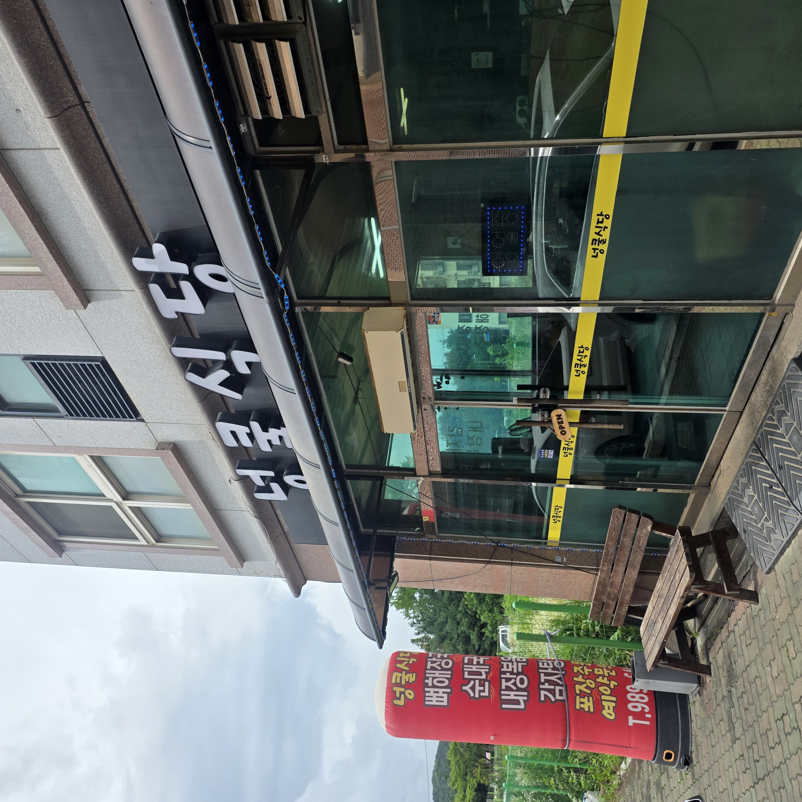
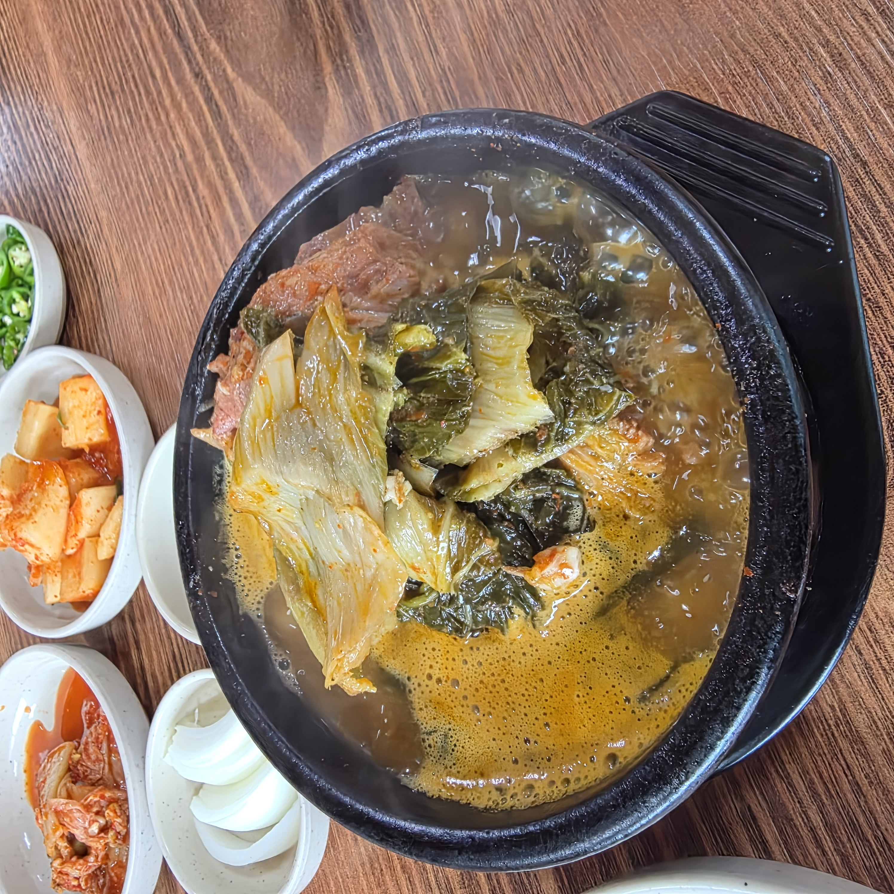
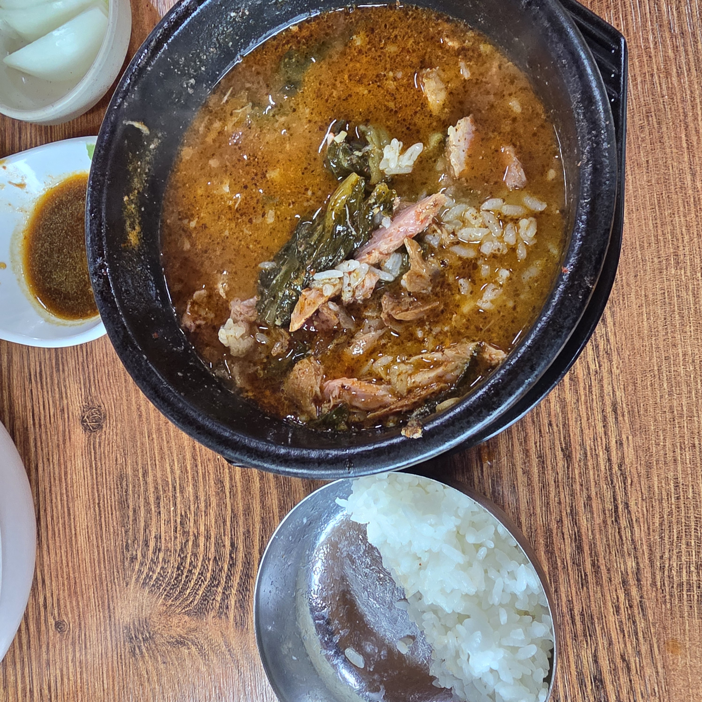
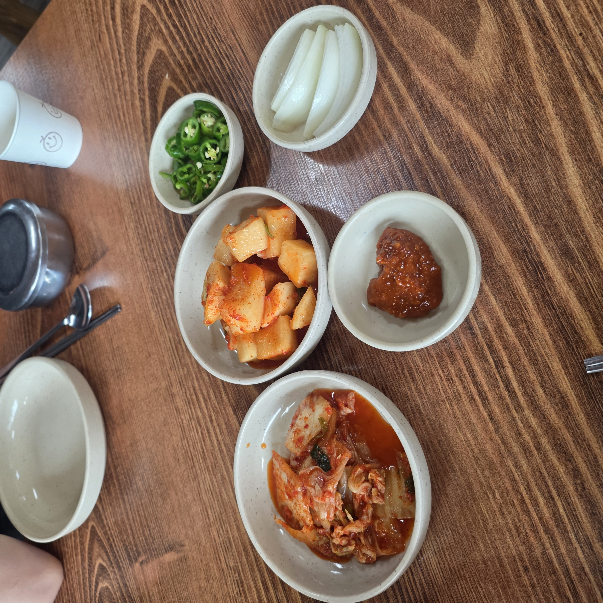
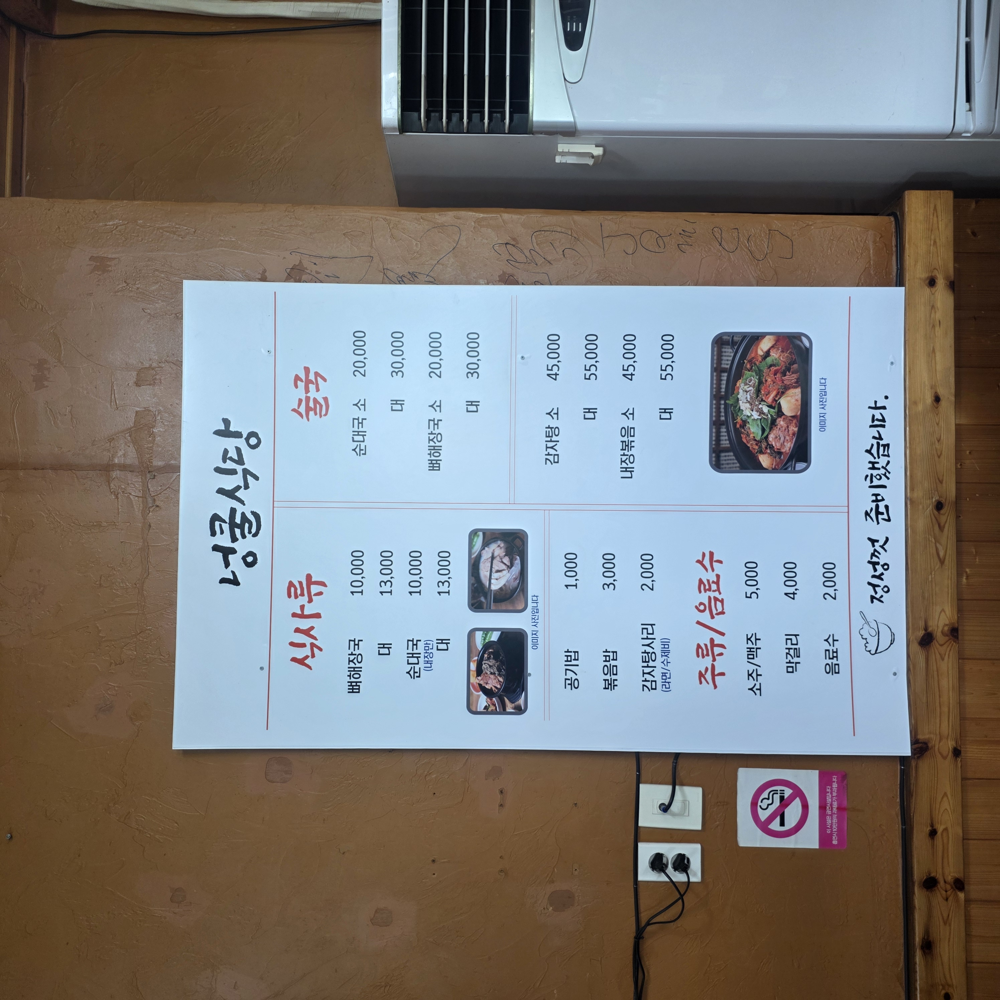
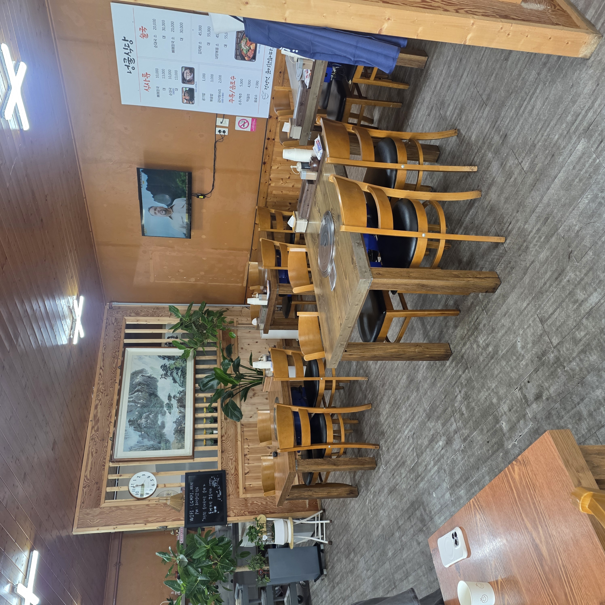

얼큰하고 뜨끈한 국밥 한 그릇이 생각나는 날, 김포 통진읍의 넝쿨식당에 가족과 다녀왔습니다.
화려한 간판을 앞세운 맛집이 아니라 동네 사람들이 조용히 찾는 노포인데, 뼈다귀해장국과 순대국이 워낙 든든해서 김포 통진 쪽에 국밥 한 그릇 찾는 분들께 소개하고 싶었어요. 무엇보다 이 집 순대국은 '순대'가 들어가지 않는 독특한 스타일이라, 그 얘기까지 사진과 함께 풀어 봅니다.

넝쿨식당은 경기 김포시 통진읍 서암로6번길 19-9(101호)에 있습니다. 통진 시가지에서 살짝 골목으로 들어간 위치라 내비 없이는 지나칠 수 있지만, 빨간 현수막이 걸린 파란 간판이 좋은 이정표가 됩니다.
번화가 유명 맛집이 아니라 주민들이 해장하러, 식구들과 한 끼 하러 들르는 밥집이라 편안했어요. 요란한 대기 줄 없이 들어가 든든하게 먹고 나오기 좋은 자리였습니다.
먼저 맛본 뼈다귀해장국은 검은 뚝배기에 우거지가 소복이 올라가 나옵니다. 뼈를 오래 고아낸 국물이 구수하고 진한데, 텁텁하지 않고 뒷맛이 개운했어요.
큼직한 등뼈 한 덩이에 살코기가 넉넉히 붙어 있어서 우거지와 함께 발라 먹는 재미가 있습니다. 아주 맵기보다는 밥 말아 먹기 좋은 칼칼함이라, 전날 과음한 날 해장으로 딱이겠다 싶었습니다.

넝쿨식당에서 가장 재미있는 포인트는 순대국에 순대가 들어 있지 않다는 것입니다. 흔히 당면 순대가 큼직하게 들어간 순대국을 떠올리지만, 여기는 순대 대신 살코기와 내장, 머릿고기로 국밥을 채웁니다.
그래서 순댓국 특유의 진한 육수는 그대로 살리면서도, 순대의 물컹한 식감이나 잡내가 부담스러운 분들에게 오히려 잘 맞아요. 밥을 말아 뚝배기째 뜨끈하게 내주는데 고기 건더기가 실하게 씹혀서 순대가 없어도 전혀 아쉽지 않았습니다. 순대를 특별히 좋아한다면 취향이 갈릴 수 있지만, 깔끔한 국밥을 좋아하는 분께는 오히려 반가운 스타일이에요.

상차림은 요란하지 않아도 국밥과 잘 맞는 기본에 충실했습니다. 깍두기와 배추김치, 아삭한 무절임, 매콤한 청양고추, 그리고 새우젓이 함께 나오는데, 순대국·뼈해장국은 이 새우젓으로 간을 맞추는 게 정석이죠.
깍두기는 과하게 달지 않고 시원하게 익어 국물과 잘 어울렸고, 청양고추와 쌈장이 느끼함을 잡아 줍니다. 밥은 스테인리스 공기에 담겨 나와 국물에 말기도, 반찬과 따로 먹기도 좋았어요. 반찬을 짜지 않게 내주는 점도 좋았습니다.

메뉴는 혼자 먹는 식사류와 여럿이 나눠 먹는 탕류로 나뉩니다. 뼈해장국·순대국이 각 10,000원(대 13,000원)이고, 감자탕·내장볶음은 소 45,000원·대 55,000원이에요. 공기밥 1,000원, 볶음밥 3,000원, 감자탕사리(수제비) 2,000원으로 곁들이기도 좋습니다.
| 뼈해장국 / 순대국 | 각 10,000원 (대 13,000원) |
| 순대국(탕) / 뼈다귀(탕) | 소 20,000원 / 대 30,000원 |
| 감자탕 / 내장볶음 | 소 45,000원 / 대 55,000원 |
| 공기밥·볶음밥·사리 | 1,000원 · 3,000원 · 2,000원 |
| 주류 | 소주·맥주 5,000원 · 막걸리 4,000원 |
혼자나 둘이면 만 원짜리 국밥, 가족이나 회식이면 감자탕·내장볶음을 큼직하게 시켜 밥·사리와 나눠 먹는 조합이 가성비가 좋아 보였습니다.

내부는 원목 테이블과 나무 의자가 줄지어 있고 벽에는 산수화 액자와 시계가 걸려 있어요. 유행하는 인테리어는 아니지만 깔끔하게 정돈돼 있어서 아이와 함께 앉기에도 편했습니다.
식사를 마친 뒤에는 시원한 옥수수수염차 한 잔으로 입가심하기 좋았어요. 뜨끈한 국밥에 얼큰한 국물을 비운 뒤라 구수한 차 한 모금이 유난히 개운했습니다. 김이 오르며 보글보글 끓는 국물은 짧은 영상으로 남겨 두면 그 느낌이 더 잘 살더라고요.

정리하면 김포 통진에서 진하고 뜨끈한 국밥이 당길 때, 순대 없이 깔끔한 순대국이나 우거지 가득한 뼈다귀해장국을 찾는 분께 추천할 만한 노포입니다. 화려함보다 정직한 한 그릇을 원한다면 만족스러울 거예요.
다만 영업시간·휴무는 공개 정보에서 확인되지 않으니, 헛걸음 없도록 방문 전에 전화로 한 번 확인하고 가시길 권합니다.
| 주소 | 경기 김포시 통진읍 서암로6번길 19-9 101호 |
| 전화 | 031-989-6441 |
| 영업시간·휴무 | 방문 전 전화 확인 권장 |
| 대표 메뉴 | 뼈해장국·순대국 각 10,000원 · 감자탕/내장볶음 소 45,000원 |
#김포맛집 #통진맛집 #넝쿨식당 #순대국 #뼈다귀해장국 #김포순대국 #김포해장국 #통진읍맛집 #김포노포 #감자탕맛집